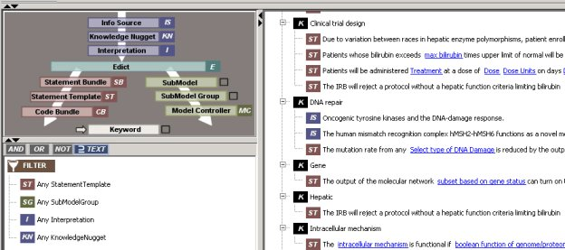
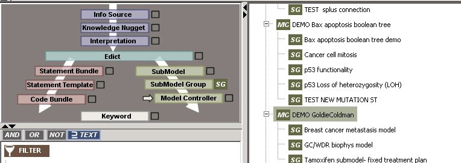
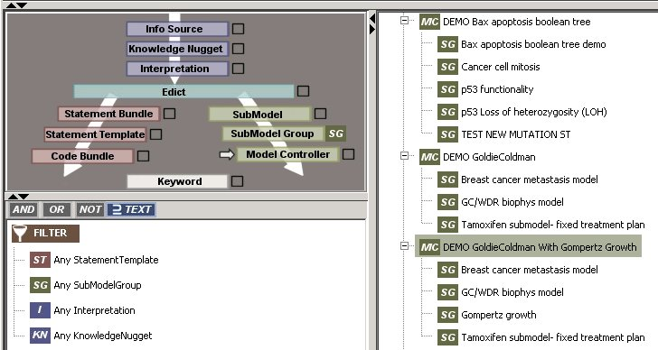

Use the tree as a Catalog to see what ideas have been modeled.
See Statement Bundles, Model controllers, Edicts that are already available for your use.
- Select Keyword as the root node.
- Select StatementBundle, Model Controler and/or Edict as leaf nodes
Note:
At this point you may also want to use the filter to show
only keywords that have one of the selected objects connected to it.
Click and drag the label from the Tri-Flow Controller into the
Filter Tree, one at time. Press the Filter On toggle button on the
OncTree Button Panel to the right of the tree.

Thought Experiments
Use the OncBrowser and Tri-Flow Controller to support various "thought" experiments. Using this tool, a modeler should be able to create and modify several thought experiments and see the results of their changes in a short period of time. Start from an existing concept and try variations on a basic theme. The user may start by looking at all the existing Model Controllers to see what concepts they implement.
- Select ModelController as the root node.
- Select SubModel Groups or Edicts as leaf nodes.

- Next Find a Model Controller that implements some of the concepts that you are interested in.
- Copy the model Controller.
- Add SubModel Groups ( new or existing) to modify the experiments
- Re-run the model. and observe the changes.
